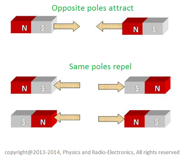
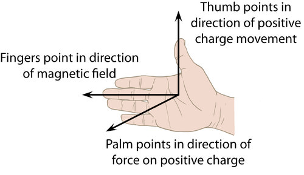
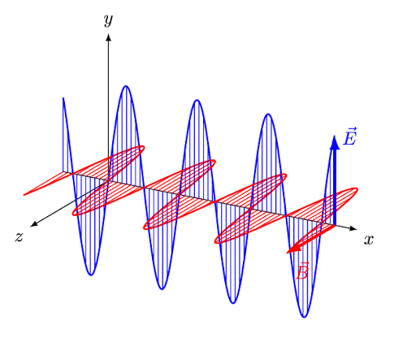
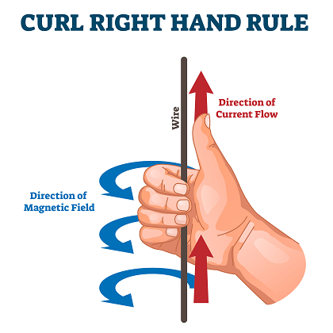
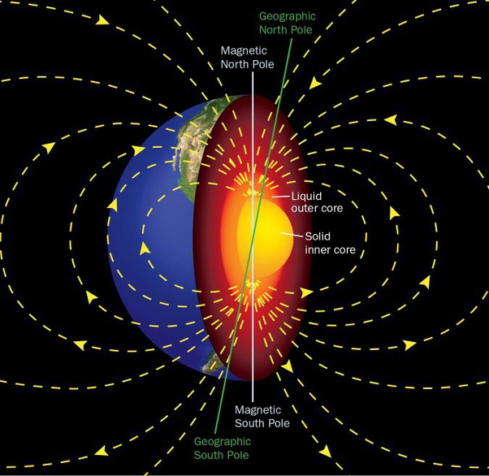

Loading
Similar to how electric charges work, thelaw of magnetismstates that opposite poles attract and similar poles repel. Poles are the regions at the end of the body of magnets where the force of magnetic attraction is the strongest.
Also similar to how electric fields surround an electric charge, there is always amagnetic fieldsurrounding the area where magnetic forces are exerted. Magnetic field lines follow a set of rules as well, which include:
Magnetic field lines never cross
The density of the field lines indicate the strength of the magnetic field (i.e., bunched up areas indicate region of stronger magnetic field)
Magnetic field lines create closed loops– they don’t start or stop anywhere
Arrowheads on the lines indicate the direction of the field
To measure magnetic fields, we use something called theright-hand rule,which is as follows: if the right thumb points in the direction of motion of the positive charge, and your extended fingers point in the direction of the magnetic field, then your open palm will point in the direction of the resulting magnetic force.
The equation for specifying the magnitude of the force on a moving charged particle is:
Where:
FM → the magnitude of the force acting on the moving charged particles, in newtons
q → the amount of charge on the moving particle in coulombs
v → the magnitude of the velocity of the moving particle in metres per second
B → the magnitude of the magnetic field strength, in teslas (SI unit, T; 1 T = 1kg/Cs)
θ → the angle between v and B
Have you ever wondered how compasses work? Why do they always point north? Well, now that we know a little bit about magnetic fields we can begin to apply that knowledge to see how objects move due to currents and conductors. Let’s take the compass needle as an example. The needle always moves towards the north, due to magnetic fields. Theconventional currentdirection is the direction of flow of positive charge. If you place a compass next to a conductor, the needle suddenly turns. This shows that the current in the conductor produces a magnetic field. From this, we know that acurrent can exert a force on a magnet, and a magnet can exert a force on a current.
With all the similarities we see between electric and magnetic forces, it didn’t take long for scientists to realize that electricity and magnetism are heavily related, which was later dubbed theelectromagnetic force.This is because it is the orientation and motion of electrons which produce magnetic fields. Later, we learned that electric and magnetic fields fluctuate together on an axis to create electromagnetic waves.
We can use the right hand rule for a straight conductor to show the direction of the magnetic field. The rule is as follows: if your right thumb points towards the direction of the conventional current, and your fingers curl inwards, then your curled fingers point in the direction of the magnetic field lines.
Magnets and magnetic fields can be seen quite often throughout our daily routines, although we do not notice them. Compasses, horseshoe magnets, MRI machines, loudspeakers, Maglev trains and more, all use magnets to function. Obviously, we can’t forget that the very planet we live on acts like one big bar magnet! Earth’s magnetic north pole can be found 1500km from the geographic poles that you’d find on a map. The geographic poles mark Earth’saxis of rotation,but themagnetic polesare located where they are due to the magnetic material found in Earth’s molten iron core. The magnetic poles are ever changing, as the magnetic material in Earth’s core changes position slightly over thousands of years. Pretty cool right!?
